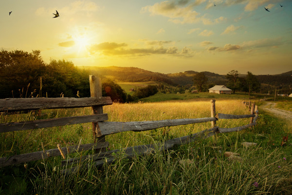

Introdução
A integração entre os saberes do campo e da cidade é essencial para o desenvolvimento sustentável. A tecnologia atua como ponte, facilitando a troca de conhecimentos e promovendo inovações que beneficiam ambas as realidades.

Conhecimentos Rurais
O meio rural é rico em práticas tradicionais, como o cultivo orgânico, manejo sustentável e preservação de sementes crioulas. Esses conhecimentos são fundamentais para a segurança alimentar e conservação do meio ambiente.
Conhecimentos Urbanos
Nas cidades, o acesso à informação, centros de pesquisa e inovações tecnológicas impulsionam o desenvolvimento de soluções que podem ser aplicadas no campo, como sistemas de irrigação automatizados e aplicativos de gestão agrícola.

Tecnologia como Elo
Plataformas digitais, como a Sumá, conectam produtores rurais diretamente aos consumidores urbanos, eliminando intermediários e promovendo comércio justo. Além disso, o uso de IoT e drones na agricultura melhora a produtividade e sustentabilidade.
Conclusão
A união dos conhecimentos rurais e urbanos, mediada pela tecnologia, é um caminho promissor para enfrentar os desafios contemporâneos. Incentivar essa integração é investir em um futuro mais equilibrado e inovador.